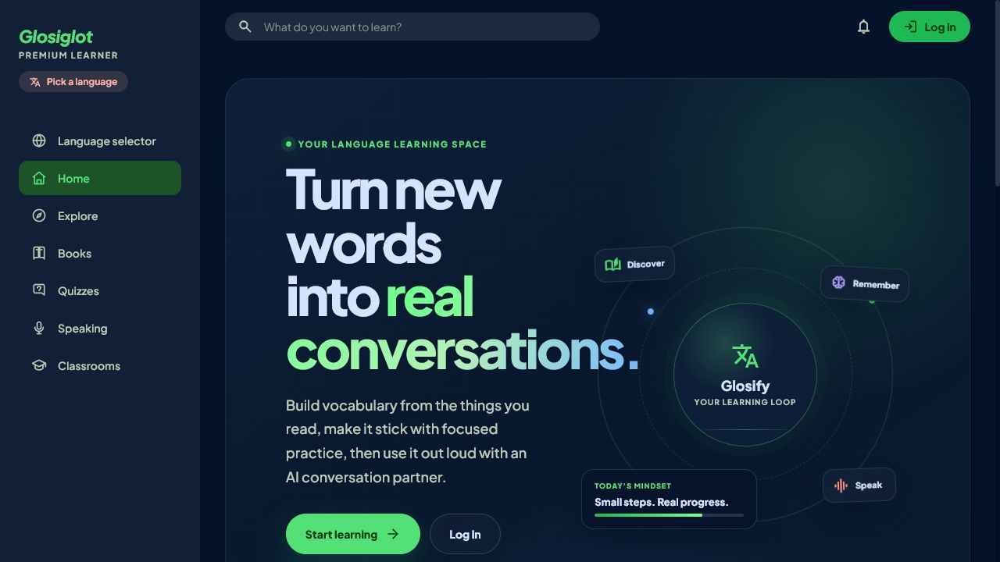
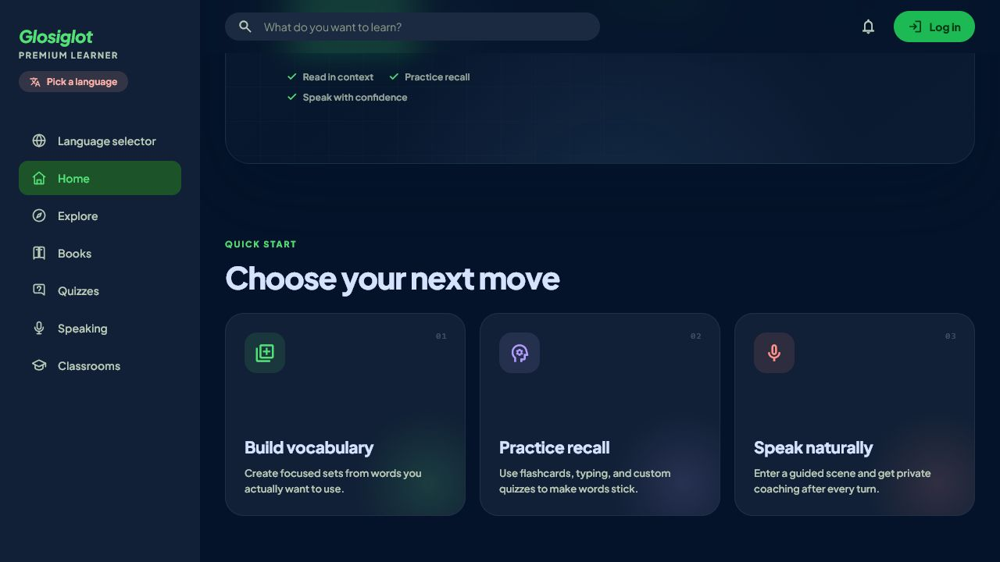

Vocabulary practice
Collections, flashcards, typing exercises, custom quizzes, example sentences, and progress tracking.
Full-stack portfolio project
A production language-learning web application for collecting vocabulary, practising recall, reading uploaded books, working in classrooms, and speaking with an AI tutor.

Product scope
Collections, flashcards, typing exercises, custom quizzes, example sentences, and progress tracking.
PDF upload, browser-based reading, text extraction, page translation, and vocabulary capture.
Guided conversation scenes using browser speech recognition, generated replies, and structured feedback.
Membership, assignments, shared content, SignalR chat, and Azure Communication Services calling.
Engineering evidence
Backend: service boundaries, EF Core migrations, SQL retry policies, authentication, authorization, validation, and rate limiting.
Cloud: Azure AI Foundry, Speech, Blob Storage, Communication Services, Monitor, and App Service.
Delivery: automated build and Azure deployment through GitHub Actions with OpenID Connect.

Technical detail
Architecture, source layout, configuration, local setup, tests, and deployment are documented separately.